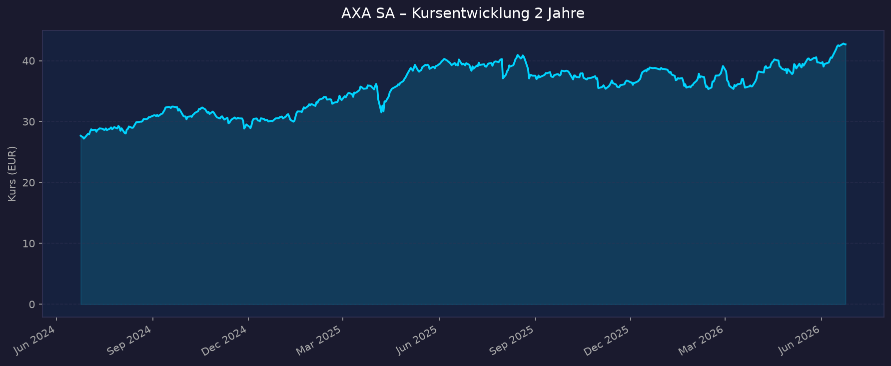
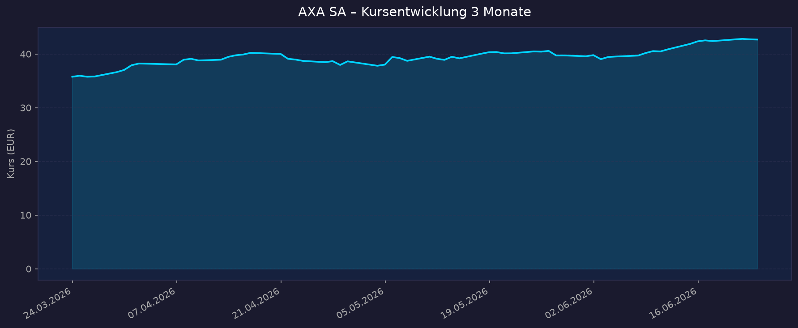

ISIN: FR0000120628 | WKN: 855705 | Börse: Euronext Paris
Branche: Versicherung (Schaden/Unfall, Leben/Kranken, nach AXA IM-Verkauf reiner Versicherer)
🔗 TradingView – AXA SA (EURONEXT:CS)
📈 1. Kursentwicklung
Aktueller Kurs: 42,68 EUR (Stand: 22.06.2026) | Veränderung heute: +0,73%
Marktkapitalisierung: ca. 87,9 Mrd. EUR | Beta: 0,61 (defensive Qualität)
Chart – 2 Jahre

Chart – 3 Monate

| Zeitraum | Kurs Start | Kurs Ende | Veränderung |
|---|---|---|---|
| 2 Jahre | 27,67 EUR | 42,68 EUR | +54,2% |
| 3 Monate | 35,76 EUR | 42,68 EUR | +19,3% |
| 52-Wochen-Hoch | — | 43,61 EUR | — |
| 52-Wochen-Tief | — | 36,55 EUR | — |
Einordnung: AXA hat in den letzten 2 Jahren eine beeindruckende Performance von +54 % gezeigt und notiert nahe dem 52-Wochen-Hoch. Die Aufwärtsbewegung der letzten 3 Monate (+19 %) deutet auf starkes Momentum hin, getrieben durch die FY2025-Ergebnisse, den abgeschlossenen AXA IM-Verkauf und das neue Buyback-Programm.
💹 2. KGV-Entwicklung (Kurs-Gewinn-Verhältnis)
Aktuelles KGV (Trailing): 12,48 | Forward KGV 2026: 9,59
| Zeitraum | KGV (TTM) | Einordnung |
|---|---|---|
| Aktuell (Juni 2026) | 12,48 | Leicht über historischem Median |
| vor 3 Monaten (März 2026) | ~11,18 | Im historischen Rahmen |
| vor 6 Monaten (Jan. 2026) | ~11,49 | Im historischen Rahmen |
| vor 12 Monaten (Juni 2025) | ~11,24 | Unter 10-Jahres-Median |
| vor 24 Monaten (Juni 2024) | ~9,80 | Historisch günstig |
| 10J-Median | 10,93 | Referenzwert |
| 10J-Minimum | 7,05 | Tiefstwert (COVID/Krise) |
| 10J-Maximum | 32,16 | Höchstwert (Niedrigzinsphase) |
Bewertung: Das aktuelle KGV von 12,5 liegt moderat über dem 10-Jahres-Median von 10,9 – allerdings rechtfertigt die starke Gewinnqualität (EPS-Wachstum +8 % in FY2025) einen gewissen Aufschlag. Das Forward-KGV von 9,6 signalisiert auf Basis der 2026er-Erwartungen eine attraktive Einstiegsbewertung. Im Peer-Vergleich (Allianz ~12x, Generali ~10x) liegt AXA im üblichen Rahmen.
💰 3. Bewertung – KBV & P/S
KBV (Kurs-Buchwert-Verhältnis): 1,86
P/S (Kurs-Umsatz-Verhältnis): ca. 0,75 (Marktkapitalisierung ~87,9 Mrd. / Umsatz ~116 Mrd. EUR)
| Kennzahl | Aktuell | vor 12 Monaten | vor 24 Monaten | Einordnung |
|---|---|---|---|---|
| KBV | 1,86 | ~1,60 | ~1,20 | Moderat; Versicherungsbranche typisch 1–2x |
| P/S | ~0,75 | ~0,65 | ~0,50 | Günstig; Versicherung typisch 0,5–1,0x |
Trend: Sowohl KBV als auch P/S sind im Aufwärtstrend – ein Zeichen dafür, dass der Markt AXAs Qualität neu bewertet. Das KBV von 1,86 ist für einen Top-Versicherer mit AA-Rating und 224 % Solvency-II-Quote fair bewertet. P/S unter 1,0 signalisiert strukturelle Unterbewertung gegenüber reinen Asset-Light-Wettbewerbern.
💵 4. Dividende & Kapitalrückführung
Dividendenrendite: ca. 5,43–5,47 % (bei Kurs 42,68 EUR)
Dividende je Aktie FY2025: 2,32 EUR (+8 % ggü. FY2024)
Ausschüttungsquote: 62,9 % (Trailing Payout Ratio)
Dividendenhistorie
| Geschäftsjahr | Dividende je Aktie | Veränderung |
|---|---|---|
| FY2025 | 2,32 EUR | +8 % |
| FY2024 | ~2,15 EUR | +7 % (ca.) |
| FY2023 | ~1,98 EUR | — |
| 10J Ø Dividendenwachstum | — | +7,7 % p.a. |
Aktienrückkäufe (Buybacks)
| Programm | Volumen | Status |
|---|---|---|
| Reguläres Rückkaufprogramm 2026 | 1,25 Mrd. EUR | Gestartet (nach FY2025-Ergebnissen) |
| Zusätzliches Programm (AXA IM-Verkaufserlös) | 3,8 Mrd. EUR | Angekündigt / in Umsetzung |
| Gesamt potenzielle Kapitalrückführung | ~5,05 Mrd. EUR | 2025–2026 |
Nachhaltigkeitsbewertung: Die Ausschüttungsquote von 63 % ist komfortabel – AXA hat ausreichend Spielraum zur Dividendensteigerung. Bei einem ROE von 13,4 % und Solvency II von 211 % (Q1 2026) ist die Dividende durch solide operative Ergebnisse gedeckt. Das Buyback-Programm von insgesamt ~5 Mrd. EUR (ca. 5,7 % der Marktkapitalisierung) ist ein starkes Kapitalrückführungssignal. Gesamtrendite Aktionäre (Dividende + Buyback) 2026 schätzungsweise 10–12 %.
📊 5. Handelsvolumen
| Zeitraum | Ø Tagesvolumen | Auffälligkeiten |
|---|---|---|
| Ø Volumen (10 Tage) | 4,14 Mio. Aktien | Jüngst erhöht |
| Ø Volumen (3 Monate) | 4,00 Mio. Aktien | Stabiles Niveau |
| Ø Volumen (längerfristig) | nicht verfügbar | — |
| Aktueller Tag | 312.512 Aktien | Ruhiger Handelstag |
Volumentrend: Das Handelsvolumen ist mit durchschnittlich 4 Mio. Aktien täglich auf hohem Niveau stabil. Keine auffälligen Volumenspitzen erkennbar. Die gute Liquidität (Days to Cover: ~1 Tag) macht AXA auch für institutionelle Investoren gut handelbar.
🏦 6. Insider / Directors' Dealings
| Datum | Name / Funktion | Kauf/Verkauf | Einschätzung |
|---|---|---|---|
| Dezember 2025 | CEO Thomas Buberl + Vorstand (mehrere) | Kauf | Starkes Vertrauenssignal |
| 2024–Mitte 2025 | Diverse Führungskräfte | Mehrheitlich Verkäufe | Gewinnmitnahmen |
3-Monats-Überblick: Keine aktuellen Meldungen für Q1 2026 verfügbar.
2-Jahres-Überblick: Nach einer Phase von Insiderverkäufen in 2024 bis Mitte 2025 signalisierten CEO Buberl und weitere Vorstandsmitglieder im Dezember 2025 durch koordinierte Käufe starkes Vertrauen in die Kursentwicklung – typischerweise positives Signal kurz vor der Berichtssaison.
Quelle: AXA Investor Relations (Directors' Dealings), InsiderScreener, MarketScreener
Hinweis: AMF-Daten für spezifische aktuelle Short-Positionen begrenzt verfügbar
🩳 7. Short-Positionen
Aktuelle Short-Quote: Niedrig — Short Interest in AXA hat sich in den letzten 12 Monaten um ca. 93 % reduziert
Days to Cover: ~1,0 Tag (sehr hohe Liquidität)
| Zeitraum | Short Interest | Veränderung |
|---|---|---|
| Aktuell (Juni 2026) | Sehr niedrig | — |
| vor 12 Monaten | Moderat | -93 % |
| Entwicklung 2 Jahre | Rückläufig | Kontinuierliche Entspannung |
Einordnung: Die massive Reduktion der Short-Positionen um 93 % in 12 Monaten ist ein starkes Bullish-Signal — Leerverkäufer decken ihre Positionen systematisch ein. Spezifische AMF-Prozentsätze für einzelne verbleibende Short-Positionen nicht verfügbar (kein öffentlich einsehbarer Wert ≥0,5 % für AXA laut verfügbarer Datenlage).
🗞️ 8. Aktuelle Nachrichten (2026)
| Datum | Quelle | Nachricht | Sentiment |
|---|---|---|---|
| 05.05.2026 | AXA IR / Investing.com | Q1 2026: Umsatz +6 % auf 38 Mrd. EUR; S&P-Upgrade auf AA; Guidance bestätigt | Positiv |
| März 2026 | S&P Global / The Insurer | S&P hebt AXA Rating von AA- auf AA an (stärkere Kapitalisierung, resiliente Erträge) | Sehr positiv |
| März 2026 | Bloomberg | BNP Paribas plant nach AXA IM-Übernahme 350 Mrd. EUR Zuflüsse bis 2030 | Neutral (abgeschlossen) |
| Februar 2026 | Bloomberg | AXA CEO Buberl warnt vor Private-Credit-Risiken; AXA-Exposure deutlich niedriger als Peers | Leicht positiv |
| Februar 2026 | AXA IR / SahmCapital | FY2025: EPS +8 %, Solvency II 224 %, Dividende 2,32 EUR; Buyback 1,25 Mrd. gestartet | Sehr positiv |
| Jan. 2026 | BNP Paribas / The TRADE | AXA IM vollständig in BNP Paribas Asset Management integriert (Trading Teams zusammengeführt) | Neutral |
| Okt. 2025 | AXA IR | 9M 2025: Umsatz +7 % YoY auf 89 Mrd. EUR | Positiv |
| Aug. 2025 | AXA IR / InsuranceBusiness | H1 2025: Umsatz +7 %, Underlying EPS +8 %, Solvency II 220 % | Positiv |
Sentiment gesamt: Überwiegend sehr positiv — getragen durch starke Ergebnisse, S&P-Rating-Upgrade, massives Buyback-Programm und klare Guidance. Einziger Schatten: Die EPS-Entwicklung im H1 2025 verfehlte leicht die Erwartungen ("EPS miss" laut Investing.com), trotz gutem Umsatzwachstum.
📋 9. Berichtsperioden (Halbjährlich)
Hinweis: AXA berichtet halbjährlich (H1/H2) + Quartalsumsätze (Activity Indicators). Keine vollständigen Quartalszahlen mit EPS verfügbar.
Q1 2026 Activity Indicators (05.05.2026)
| Kennzahl | Ist | Veränderung ggü. Vorjahr |
|---|---|---|
| Gesamtumsatz | 38,0 Mrd. EUR | +6 % |
| P&C Prämien | 21,5 Mrd. EUR | +4 % |
| L&H Prämien | 16,5 Mrd. EUR | +8 % |
| L&H Net Flows | 2,7 Mrd. EUR | +8 % |
| Solvency II | 211 % | -4 Punkte (nach Grandfathering-Ende) |
| S&P Rating | AA | Upgrade von AA- |
Guidance: EPS-Wachstum 2026 am oberen Ende der Zielbandbreite (+6–8 %); Neuer Strategieplan geplant für 15.09.2026
Kursreaktion: Positiv (Aktie stieg laut Investing.com-Titel: "stock rises")
FY2025 Ergebnisse (26.02.2026)
| Kennzahl | Ist | Veränderung ggü. FY2024 |
|---|---|---|
| Gesamtumsatz | 116,0 Mrd. EUR | +6 % |
| Underlying Earnings | 8,4 Mrd. EUR | +6 % |
| EPS (bereinigt) | 3,86 EUR | +8 % |
| Dividende je Aktie | 2,32 EUR | +8 % |
| Solvency II | 224 % | +9 Punkte |
| Combined Ratio P&C | ~90 % (ca.) | ~stabil (H1: 90,0 %) |
Guidance FY2026: EPS-Wachstum am oberen Ende der Plan-Bandbreite (+6–8 % p.a.)
Kursreaktion: Moderat — Aktie notierte bei ca. 42,68 EUR (-0,09 % am Ergebnistag; Bewertung bereits eingepreist)
H1 2025 Ergebnisse (01.08.2025)
| Kennzahl | Ist | Veränderung ggü. H1 2024 |
|---|---|---|
| Gesamtumsatz | 64,3 Mrd. EUR | +7 % |
| Underlying Earnings | 4,5 Mrd. EUR | +6 % |
| EPS (bereinigt) | 2,03 EUR | +8 % |
| P&C Underlying Earnings | 3,1 Mrd. EUR | +7 % |
| L&H Underlying Earnings | 1,8 Mrd. EUR | +5 % |
| Solvency II | 220 % | +4 Punkte vs. FY2024 |
| Combined Ratio P&C | 90,0 % | -0,1 Punkte |
Guidance: Implizit FY2025-Ziele bestätigt
Kursreaktion: Leicht negativ — "EPS miss" gegenüber Analystenerwartungen trotz starkem Umsatzwachstum; kurzfristiger Rücksetzer wurde jedoch aufgeholt
🌍 10. Marktkontext & Wettbewerb
Europäischer Versicherungsmarkt 2026
Der europäische Versicherungsmarkt ist einer der weltweit größten mit einem Gesamtvolumen von >1 Billion EUR in Prämien. AXA ist nach Allianz der zweitgrößte europäische Versicherer mit globaler Präsenz in 50+ Ländern.
Schlüsseltrends 2026:
- Zinsumfeld: Höhere Zinsen stützen Kapitalanlagerenditen → positiv für Leben/Gesundheit und Eigenkapitalrendite
- Commercial Lines / P&C Härtung: Preissteigerungen flachen ab (Soft-Market-Übergang), aber P&C-Wachstum bleibt solide (+3–4 %)
- Health/Gesundheitsversicherung: Stärkstes Wachstumssegment (+8 % in Q1 2026); AXA Health ist europäischer Marktführer
- KI & Digitalisierung: AXA investiert in KI für Underwriting und Claims; Allianz führt im AI-Talent-Index 2026
- Naturkatastrophen: Wachsendes Risiko (Klimawandel); AXA Futures Risks Report zeigt Klimawandel als Top-Risiko Nr. 1
- AXA IM-Verkauf abgeschlossen: AXA ist jetzt reiner Versicherer — einfacheres Geschäftsmodell, starke Kapitalfreistellung
Wettbewerber-Vergleich
| Wettbewerber | Marktposition | KGV (ca.) | Solvency II | Dividendenrendite | Stärke | Schwäche |
|---|---|---|---|---|---|---|
| Allianz | #1 Europa | ~12x | >220 % | ~5,5 % | AI-Kompetenz, Diversifikation | Komplexität, Kapitalintensität |
| AXA SA | #2 Europa | 12,5x | 211 % | ~5,4 % | Health-Leadership, AA-Rating, Buybacks | Post-AXA-IM Neupositionierung |
| Generali | #3 Europa | ~10x | >215 % | ~5,8 % | Südeuropa-Stärke, Asset Management | Kleineres globales Netzwerk |
| Zurich Insurance | #4 | ~14x | >220 % | ~5,0 % | Commercial Lines, Schweizer Stabilität | Höhere Bewertung, kleinere Skala |
Marktposition AXA: Solider zweiter Platz in Europa — klar führend in Health Insurance (europäischer Marktführer), stark in P&C Commercial Lines (insbes. AXA XL). Nach dem AXA IM-Verkauf fokussiert AXA das Kapital vollständig auf das Kernversicherungsgeschäft. S&P AA-Rating (März 2026) ist starkes Gütezeichen.
Risiken aus dem Marktumfeld:
- Frankreich-Risiko: Politische Unsicherheit und potenzielle Steuererhöhungen in Frankreich (Heimatmarkt)
- Naturkatastrophen: Steigende Frequenz und Schwere; Combined Ratio unter Druck bei Extremereignissen
- Private Credit Exposure: CEO Buberl warnte (Feb. 2026) vor Marktrisiken in Private Credit — AXA aber mit deutlich niedrigerer Exposition als Peers
- Soft-Market-Übergang P&C: Preissteigerungen im Commercial-Lines-Segment lassen nach; Margenkompressionsdruck
- AXA IM-Lücke: Verlust der Asset-Management-Gebühreneinnahmen (AXA IM wurde an BNP verkauft) — teilweise kompensiert durch Buybacks aus Verkaufserlös
📊 11. Value-Bewertungsmatrix
| Kriterium | Gewicht | Punkte | Begründung |
|---|---|---|---|
| 💰 Bewertung (KGV/KBV vs. Historie & Peers) | 25% | 7/10 | Forward-KGV 9,6x attraktiv; KBV 1,86x fair für AA-Qualität; trailing KGV 12,5x leicht über Median; P/S 0,75x günstig |
| 💵 Dividende & Kapitalrückführung | 25% | 9/10 | Dividendenrendite 5,4 % + Buybacks 5 Mrd. EUR (Gesamtrendite ~10–12 %); 7,7 % Dividendenwachstum p.a.; Ausschüttungsquote 63 % nachhaltig |
| 🛡️ Bilanzstärke & Stabilität (Solvency II, Rating, Combined Ratio) | 20% | 9/10 | Solvency II 211 % (Q1 2026) weit über regulatorischen Minimum; AA-Rating (S&P, März 2026 Upgrade); Combined Ratio P&C ~90 % exzellent; Beta 0,61 defensiv |
| 📈 Gewinnqualität & Wachstum (EPS-Wachstum, ROE) | 15% | 7/10 | EPS +8 % FY2025 und H1 2025; ROE 13,4 % solide (aber nicht spektakulär); konsistentes Wachstum über Zyklen; Guidance oberes Ende der 6–8 % Bandbreite |
| ⚡ Katalysatoren & Risiken | 15% | 7/10 | Starke Katalysatoren: AA-Rating, Buyback 5 Mrd., neuer Strategieplan Sep. 2026; Risiken: Naturkatastrophen, Frankreich-Politik, Soft-Market P&C, Post-AXA-IM Neupositionierung |
| Gesamt (gewichtet) | 7,9/10 | Starker Versicherungs-Value-Wert mit attraktiver Gesamtrendite und exzellenter Kapitalausstattung |
5-Jahres-Szenario bis 2031
Annahmen: EPS-Wachstum laut Guidance, Dividendenwachstum fortgeschrieben, Bewertungsmultipel-Entwicklung je nach Szenario.
| Szenario | Kurs 2031 | Upside/Downside | Dividendenbeitrag (5J kum.) | Gesamtrendite |
|---|---|---|---|---|
| 🐻 Bär | ~32 EUR | -25 % | ~+11 EUR (kum.) | ~+0 % gesamt |
| 📊 Base | ~55 EUR | +29 % | ~+14 EUR (kum.) | +62 % gesamt |
| 🚀 Bull | ~72 EUR | +69 % | ~+16 EUR (kum.) | +107 % gesamt |
Bär-Szenario: Schwere Naturkatastrophen-Jahre, Frankreich-Steuerbelastung, Zinssenkungszyklus drückt Kapitalerträge, KGV-Kontraktion auf 8x. Dividende bleibt stabil, dämpft Verlust.
Base-Szenario: EPS +6–8 % p.a. gemäß Guidance, KGV-Expansion auf 11x, kontinuierliche Dividendensteigerung +6 % p.a.
Bull-Szenario: Strategieplan Sep. 2026 überzeugt, Health-Segment wächst zweistellig, neues Buyback-Programm post-2026, KGV-Expansion auf 14x durch Qualitätspremium-Anerkennung.
✅ Gesamteinschätzung
Stärken:
- Exzellente Kapitalausstattung (Solvency II 211 %, AA-Rating S&P) und sehr defensiver Charakter (Beta 0,61)
- Attraktive Gesamtrendite für Aktionäre: ~5,4 % Dividende + Buybacks in Höhe von 5 Mrd. EUR → ~10–12 % Kapitalrückführungsrendite 2026
- Konsistentes EPS-Wachstum (+8 % FY2025 und H1 2025); Guidance am oberen Ende der 6–8 % Bandbreite bekräftigt
Risiken:
- Naturkatastrophen und Klimawandel als strukturelles Risiko für P&C Combined Ratio
- Frankreich-Risiko: Heimatmarkt anfällig für politische Eingriffe und Steuererhöhungen
- Post-AXA-IM-Neupositionierung: Verlust der Asset-Management-Erlöse (AXA IM = BNP Paribas seit Juli 2025) noch nicht vollständig in neuer Strategie abgebildet; neuer Strategieplan erst September 2026
Fazit: AXA SA ist ein europäischer Qualitätsversicherer mit defensivem Profil, attraktiver Gesamtrendite und exzellenter Kapitalausstattung. Die Aktie notiert nahe dem 52-Wochen-Hoch und hat nach dem AXA IM-Verkauf eine klare Fokussierung auf das Kerngeschäft vollzogen. Für einkommensorientierte und Value-Investoren bietet AXA bei einem Forward-KGV von ~9,6x und einer Gesamtkapitalrückführungsrendite von >10 % ein attraktives Chance-Risiko-Profil — insbesondere wenn der neue Strategieplan im September 2026 überzeugt.
Datenquellen: AXA SA Investor Relations (axa.com) · Yahoo Finance (yfinance) · S&P Global Ratings · Investing.com · Reuters · Bloomberg · finanzen.net · InsuranceBusiness Mag · MarketScreener · companiesmarketcap.com · aktien.guide · aktienfinder.net · InsiderScreener · shortregister.com (AMF-Daten)
Keine Anlageberatung — rein informative Auswertung öffentlicher Daten. Stand: 2026-06-24.